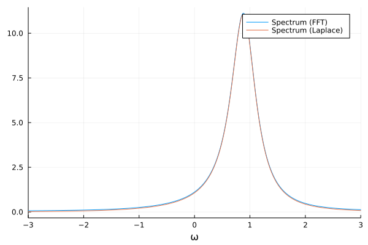

Spectrum of a single-atom laser
In this example, we will compute the spectrum of the single-atom laser, which is also shown in the Tutorial. The Hamitlonian of the system is
\[H = \Delta a^\dagger a + g\left(a^\dagger \sigma^{ge} + a\sigma^{eg}\right),\]
where $\Delta = \omega_\mathrm{c} - \omega_\mathrm{a}$ is the detuning between the cavity and the atomic resonance frequency, respectively. The cavity loses photons at a rate $\kappa$, and the atom is subject to spontaneous emission with a rate $\gamma$. Additionally, the atom is incoherently driven with a rate $\nu$, such that it can provide lasing gain to the system. We start, by specifying this model.
using QuantumCumulants
using ModelingToolkit, OrdinaryDiffEq
using Plots
# Define parameters
@cnumbers Δ g γ κ ν
# Define hilbert space
hf = FockSpace(:cavity)
ha = NLevelSpace(:atom,(:g,:e))
h = hf ⊗ ha
# Define the fundamental operators
a = Destroy(h,:a)
s = Transition(h,:σ,:g,:e)
# Hamiltonian
H = Δ*a'*a + g*(a'*s + a*s')
# Collapse operators
J = [a,s,s']
rates = [κ,γ,ν]The first equation we want to derive is that for the average photon number $\langle a^\dagger a \rangle$.
# Derive equation for average photon number
eq_n = meanfield(a'*a,H,J;rates=rates,order=2)The remaining equations will be computed automatically using the complete function. However, we want to exclude terms such as $\langle a \rangle$ since these are phase-dependent and therefore 0 in our phase-invariant system. To this end, we provide a custom filter function to complete. This function should return true, if the given average should be included, and false if it should be excluded (just like Julia's native filter function requires). We write a small function $\phi$ that computes the phase of an average, such that $\phi(a) = -1$, $\phi(a^\dagger) = 1$, and $\phi(a^\dagger a) = \phi(a) + \phi(a^\dagger) = 0$. Similarly, we want to have $\phi(\sigma^{eg})=1=-\phi(\sigma^{ge})$, and $\phi(\sigma^{ee})=0$. An average of an operator $x$ is then said to be phase invariant if $\phi(x)=0$.
# Custom filter function -- include only phase-invariant terms
ϕ(x) = 0
ϕ(::Destroy) = -1
ϕ(::Create) = 1
function ϕ(t::Transition)
if (t.i==:e && t.j==:g)
1
elseif (t.i==:g && t.j==:e)
-1
else
0
end
end
ϕ(avg::Average) = ϕ(avg.arguments[1])
function ϕ(t::QuantumCumulants.QMul)
p = 0
for arg in t.args_nc
p += ϕ(arg)
end
return p
end
phase_invariant(x) = iszero(ϕ(x))
# Complete equations
eqs = complete(eq_n;filter_func=phase_invariant)\begin{align} \frac{d}{dt} \langle a^\dagger a\rangle =& -1.0 \kappa \langle a^\dagger a\rangle -1 i g \langle a^\dagger {\sigma}^{{ge}}\rangle + 1 i g \langle a {\sigma}^{{eg}}\rangle \\ \frac{d}{dt} \langle a^\dagger {\sigma}^{{ge}}\rangle =& 1 i g \langle {\sigma}^{{ee}}\rangle -1 i g \langle a^\dagger a\rangle -0.5 \gamma \langle a^\dagger {\sigma}^{{ge}}\rangle -0.5 \kappa \langle a^\dagger {\sigma}^{{ge}}\rangle -0.5 \nu \langle a^\dagger {\sigma}^{{ge}}\rangle + 1 i \Delta \langle a^\dagger {\sigma}^{{ge}}\rangle + 2 i g \langle {\sigma}^{{ee}}\rangle \langle a^\dagger a\rangle \\ \frac{d}{dt} \langle {\sigma}^{{ee}}\rangle =& \nu -1.0 \gamma \langle {\sigma}^{{ee}}\rangle -1.0 \nu \langle {\sigma}^{{ee}}\rangle + 1 i g \langle a^\dagger {\sigma}^{{ge}}\rangle -1 i g \langle a {\sigma}^{{eg}}\rangle \end{align}
In order to compute the spectrum, we first compute the correlation function $g(\tau) = \langle a^\dagger(t_0 + \tau) a(t_0)\rangle \equiv \langle a^\dagger a_0\rangle.$
Note that the CorrelationFunction finds the equation for $g(\tau)$ and then completes the system of equations by using its own version of the complete function. We can also provide the same custom filter function as before to skip over terms that are not phase-invariant. Similarly, setting the keyword steady_state=true, we tell the function not to derive equations of motion for operators that do not depend on $\tau$, but only on $t_0$ (if $t_0$ is in steady state, these values do not change with $\tau$).
# Correlation function
c = CorrelationFunction(a', a, eqs; steady_state=true, filter_func=phase_invariant)\[\langle a^\dagger a_0\rangle\]
As we can see, there are only two equations necessary to obtain the correlation function:
c.de\[\begin{align} \frac{d}{dt} \langle a^\dagger a_0\rangle =& 1.0 i g \langle {\sigma}^{{eg}} a_0\rangle + 1.0 i \Delta \langle a^\dagger a_0\rangle -0.5 \kappa \langle a^\dagger a_0\rangle \\ \frac{d}{dt} \langle {\sigma}^{{eg}} a_0\rangle =& 1.0 i g \langle a^\dagger a_0\rangle -0.5 \gamma \langle {\sigma}^{{eg}} a_0\rangle -0.5 \nu \langle {\sigma}^{{eg}} a_0\rangle -2.0 i \langle {\sigma}^{{ee}}\rangle g \langle a^\dagger a_0\rangle \end{align}\]
The spectrum can now be computed by solving the above system of equations and then taking the Fourier transform, or by taking the Fourier transform directly, which is done by constructing an instance of the Spectrum type. Here, we will compare both approaches.
In any case, we need to compute the steady state of the system numerically.
# Numerical solution
ps = (Δ, g, γ, κ, ν)
@named sys = ODESystem(eqs)
u0 = zeros(ComplexF64, length(eqs))
p0 = (1.0, 1.5, 0.25, 1, 4)
prob = ODEProblem(sys,u0,(0.0,10.0),ps.=>p0)
sol = solve(prob,RK4())Now, we can compute the time evolution of the correlation function in a similar way. Since the initial state of this system does not necessarily depend on all steady-state values, we can use the correlation_u0 function which automatically generates the correct initial state vector required. Similarly, we use correlation_p0 which generates the list of parameters including all needed steady-state values.
# Time evolution of correlation function
@named csys = ODESystem(c)
u0_c = correlation_u0(c,sol.u[end])
p0_c = correlation_p0(c,sol.u[end],ps.=>p0)
prob_c = ODEProblem(csys,u0_c,(0.0,500.0),p0_c)
sol_c = solve(prob_c,RK4(),save_idxs=1)Finally, we borrow the FFT function from QuantumOptics.jl and compute the spectrum from the solution. Note that this requires an equidistant list of times, and we therefore interpolate the solution from the differential equation.
# Interpolate solution
τ = range(0.0, sol_c.t[end], length=15001)
corr = sol_c.(τ)
# Compute spectrum
using QuantumOptics.timecorrelations: correlation2spectrum
ω, s_fft = correlation2spectrum(τ, corr)Now, in order to compare we also compute the spectrum by constructing it directly from the correlation function and plot the results.
# Spectrum
S = Spectrum(c,ps)
s_laplace = S(ω,sol.u[end],p0)
plot(ω, s_fft, label="Spectrum (FFT)", xlabel="ω")
plot!(ω, s_laplace, label="Spectrum (Laplace)")
xlims!(-3,3)
As expected, both methods yield exactly the same spectrum. The difference is just in the method used, with the Laplace transform having a computational advantage.